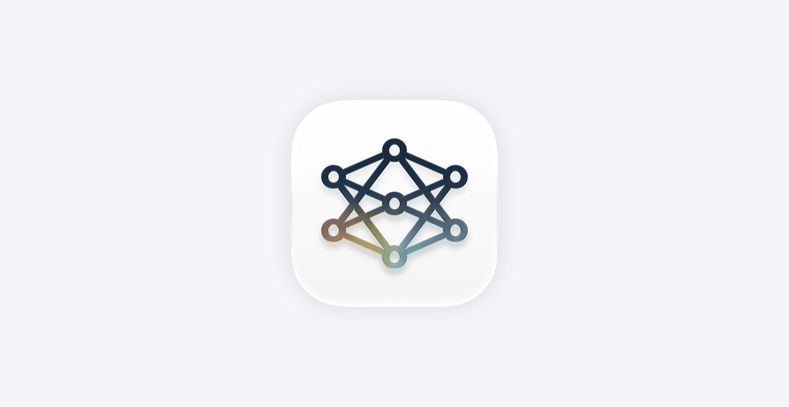

苹果WWDC 2026全面AI化：Apple Intelligence、Siri AI与第三代AFM三箭齐发

一、导语
2026年6月8日，苹果在WWDC 2026上释放了史上最大规模的AI产品矩阵——新一代Apple Intelligence、全新Siri AI、第三代Apple Foundation Models（AFM）以及面向开发者的Core AI框架。这不仅是苹果从硬件公司向AI平台公司转型的分水岭，也意味着全球最庞大的消费电子生态正在以「端侧AI优先」的方式重塑用户体验。本次发布涉及iOS 27、iPadOS 27、macOS 27三大操作系统，以及面向开发者的全新Core AI框架。
二、背景分析
苹果在AI领域的布局此前一直被外界视作「保守」。相比OpenAI、Google、Meta在生成式AI上的迅猛进展，苹果直到2024年WWDC才正式推出Apple Intelligence，且在多数功能上选择与OpenAI合作。但过去一年，苹果悄然完成了三件事：其一，自研大语言模型AFM迭代至第三代，端侧参数规模达到30B；其二，收购了至少6家AI初创公司，涵盖语音、图像、视频理解领域；其三，在开发者关系层面推出Core AI框架，让第三方应用可以直接调用苹果的端侧模型能力。
本次WWDC的时间点也耐人寻味——就在发布会前一天，Bloomberg曝出苹果内部的一场秘密会议，内容正是「如何认真对待AI」。该报道引述了苹果高级副总裁团队于2025年底的一次闭门会议，会议结论是「如果不能主导AI，苹果将失去下一个十年」。
「如果不能主导AI，苹果将失去下一个十年。」 —— 援引Bloomberg报道中苹果高级副总裁团队闭门会议结论
三、核心内容
3.1 新一代Apple Intelligence：深度系统集成
新一代Apple Intelligence不再是独立的功能模块，而是深度集成到iOS 27的内核层。它具备以下关键能力：
- 跨应用智能调度：用户可以用自然语言同时操作邮件、日历、备忘录、文件管理等多个App，不再需要逐一切换——例如「帮我找出上周五的会议记录，总结成要点，然后发给团队」将在一个指令中完成。
- 隐私优先架构：所有推理在端侧完成，仅在用户明确授权时才会调用云端辅助。Apple承诺「你的数据就是你的数据」——任何Apple Intelligence处理的信息不会被上传或被苹果本身访问。
- 实时上下文感知：系统可以持续理解用户当前的工作流上下文，无需每次重新解释意图。

3.2 全新Siri AI：从语音助手到AI Agent
Siri经历了一次彻底的重构。新版Siri AI基于AFM第三代模型，支持：
- 多轮复杂对话：上下文理解窗口扩展至128K tokens，可以记住整场对话的上下文
- 屏幕感知：能够理解当前屏幕内容，并根据用户注视位置判断意图
- 第三方集成：通过Core AI框架，第三方App可以注册自己的AI能力供Siri调用
- 多模态理解：支持图像、文档、网页内容的即时理解
不过值得注意的是，由于欧盟《数字市场法案》（DMA）的影响，Siri AI在欧盟地区的上线将延迟，随iOS 27和iPadOS 27的后续更新另行推送。
3.3 第三代Apple Foundation Models（AFM）
苹果在Apple Machine Learning Research官网同步发布了第三代AFM技术报告。核心参数包括：
- 端侧模型：30B参数，在iPhone/iPad本地运行，推理速度达50 tokens/s
- 云端辅助模型：200B参数，仅在用户明确授权且需要高复杂度推理时启用
- 训练数据：经过严格筛选和过滤的12T tokens数据集，不含用户隐私数据
- benchmark表现：在MMLU上达到86.7%，在HumanEval上达到79.2%，与GPT-4o-mini持平
3.4 Core AI框架：开发者生态的核心拼图
Core AI框架是一个全新的苹果原生AI开发框架，采用Swift原生API设计，支持开发者使用苹果的端侧模型做推理、微调和部署。它打通了从模型训练到端侧部署的全链路——开发者可以上传自己的模型并使用Apple Silicon的神经网络引擎进行优化。
「Core AI框架是苹果AI生态的开放时刻。它让Apple Intelligence从苹果自己的功能变成一个真正的开发者平台。」 —— 分析师评论
四、各方反应
发布会后，市场反应极为正面。苹果股价在盘后交易中上涨3.2%，市值重新站上3.5万亿美元。
开发者社区的反应尤为积极。Hacker News上关于Core AI框架的帖子获得109个点赞，大量开发者表示「终于等到苹果开放AI能力」。一位名为「mattpocock」的开发者指出：「Core AI框架意味着我们可以用Swift写AI应用，不再被迫转用Python或JavaScript。」
竞争对手方面，Google同日在X上发布AI产品更新（包含Nano Banana 2、Co-Scientist等），被外界解读为对苹果WWDC的「抢跑」应对。而OpenAI方面，CEO奥尔特曼则在同一天宣布公司进入「第三发展阶段」，强调AI的普及、易用和安全。
但也有批评声音。隐私倡导者指出，尽管苹果强调隐私优先，但Core AI框架允许第三方App调用端侧模型后能否真正隔离数据仍需观察。此外，欧盟DMA导致的Siri AI延迟上线也引发了关于「数字主权」的热议。
五、深度解读
这次WWDC的AI发布，本质上是苹果「端侧AI优先」战略的完整落地。与竞争对手（OpenAI、Google、Meta）选择的「云端大模型+API」路线不同，苹果赌的是——当AI推理能够在用户设备上实时运行，用户体验的延迟、隐私和个性化将构成不可逾越的护城河。
从商业角度看，Apple Intelligence + Core AI框架的组合可能比App Store更具颠覆性。App Store创造的是分发渠道，而Core AI框架创造的是能力分发——第三方不再只是开发App，而是开发能调用系统级AI能力的「智能组件」。这可能会催生一个全新的AI应用生态。
从更大的行业视角看，苹果的入局标志着「AI平台战争」正式进入第三阶段：第一阶段是模型竞赛（OpenAI vs Anthropic vs Google），第二阶段是应用层竞赛（ChatGPT vs Claude vs Gemini），第三阶段是生态层竞赛——谁能把自己的AI能力嵌入到用户每天的默认使用场景中。苹果手握20亿+活跃设备，具备天然优势。
六、总结
WWDC 2026是苹果历史上AI浓度最高的一届开发者大会。Apple Intelligence、Siri AI、第三代AFM、Core AI框架四线并行，标致着苹果正式从「AI跟随者」转变为「AI平台定义者」。未来12个月将决定苹果能否在AI生态竞争中真正建立起自己的阵地——而核心变量只有一个：开发者是否买账。
主要信息来源：